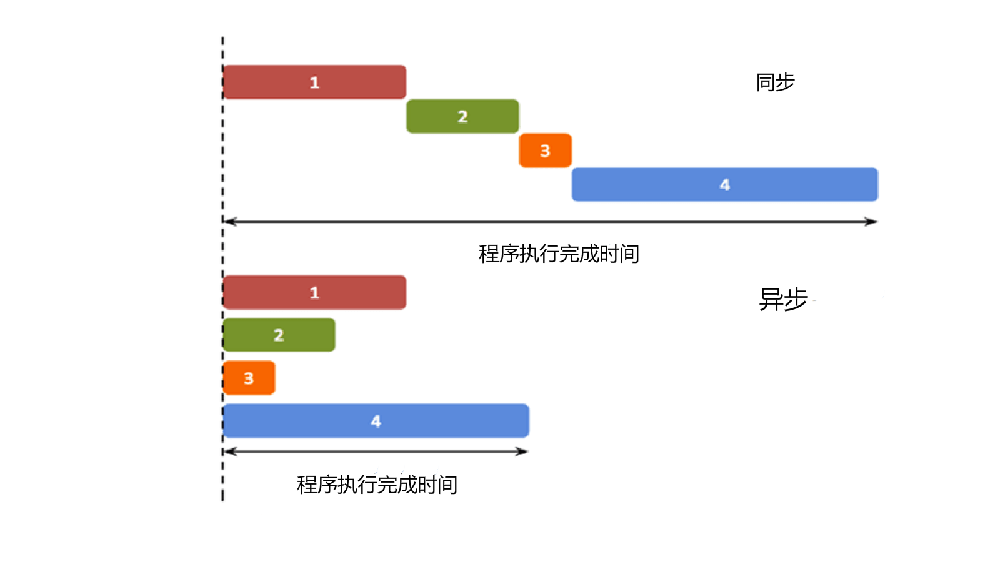
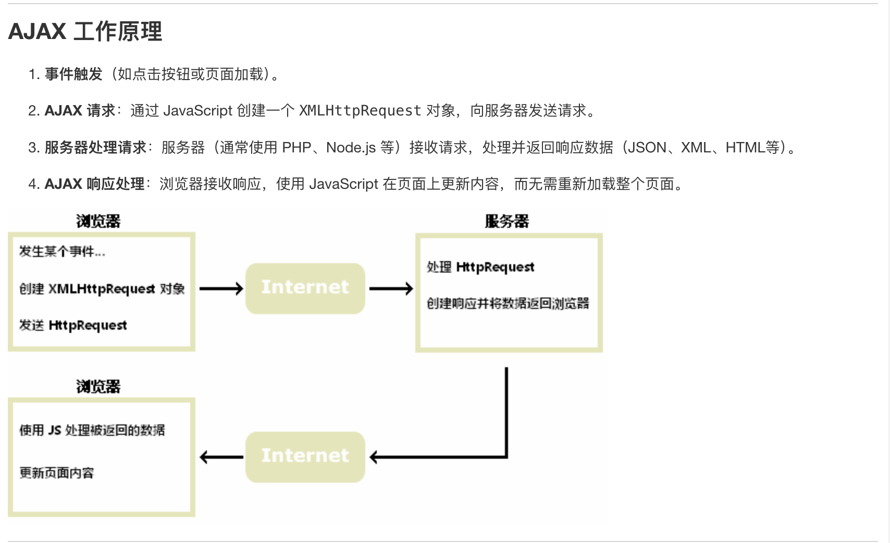

Asynchronous with Synchronous
异步与同步编程
- 首先区分一下概念，什么是同步/异步？
- 同步: 表示的是程序按照顺序执行
- 异步: 表示的是程序不按照顺序执行,也就是主线程发射一个子线程来执行，这样的效率更高
下面给张图比较好理解:

具体来理解一下异步编程：
异步编程的本质是什么？
本质是从主线程发射子线程，因为子线程是不会影响主线程，在操作系统里学过对于子线程来说，我们进行了fork操作，二者共享代码，数据等"相对静态"的资源，而维护属于各自的寄存器，栈，PC等“相对动态”的资源。或者说这样理解，线程是只享有自己的独立动态资源，但那些静态的资源就是共享的了。而在前端编程中，我们在处理一些简短、快速的操作时候，往往在主线程中就可以完成，主线程作为一个线程，不能接受多方面的请求，也就是说单个事件没有完成的时候，是不会处理其他的请求。
我们现在有一个按钮，按下就会形成死循环，整个页面会失去响应，所以我们这种时候就不能使用主线程来完成这个事件，因为可能会导致后续事件的terminated,因此我们选择使用子线程来并行完成这个事件。所以我们就考虑了异步来处理，由于子线程一旦发射了就会和主线程失去同步，无法确认它的结果，所以需要有callback回调函数来处理实现异步任务的结果处理。
这个例子其实就是对于setTimeout函数的使用，setTimeout(event,time) waiting for time to call the event.
1 2 3 4 5 | |
Promise Object
A
promise objectcontains both the producing code and calls the consuming code.
简单的理解就是，一个promise object 负责了异步操作的执行和结果的使用。
换句话说就是，promise object对象实现了一个封装，他同时包含了生产和结果反馈两部分内容于一体。
下面看个例子(模板)：
1 2 3 4 5 6 7 8 9 10 11 12 | |
myPromise中去。
- 一个
promise object可以- pending
- fulfilled
- rejected
或者一种更本质的方法是把
promise object看成状态机的某个状态state以及接下来的result.
| State | pending | fulfilled | rejected |
|---|---|---|---|
| result | undefined | a result value | an error object |
How to use Promise object
1 2 3 4 5 6 7 8 9 10 11 12 13 14 15 16 17 18 19 20 | |
myPromise作为promise object的实例，myResolve和myReject是两个内置的函数，分别用于传递成功/失败的结果。我们看上面这段代码，有x==0那么始终是myResolve中传递了OK进入.then阶段，然后由于success，那么在Promise被成功调用的时候，都会执行myDisplay(value).
再来一个通俗易懂的例子
1 2 3 4 5 6 7 8 9 10 11 12 13 14 15 16 | |
async 关键字
The keyword
asyncbefore a function makes the funcion return a promise.
现在就比较好理解了，在function()之前加上async关键字就表示的是return的结果是一个promise object生产函数之后的result.可能现在不太好理解，我们看下面这个例子：
1 2 3 4 5 6 7 8 9 | |
return 的结果我们可以默认他总是success,所以可以使用resolve.
1 2 3 4 5 6 7 8 9 10 11 12 | |
await operation
It expects a Promise object(representing an asynchronous computation) 它显性的表示了一个许诺对象，也就是说明它会进行异步计算。
- It can only be used inside an
asyncfunction. - The
awaitkeyword makes the function pause the execution and wait for a resolved promise before it continues. 先等异步的resolve promise再继续执行函数的值。
下面给个例子
1 2 3 4 5 6 7 8 9 | |
I love you !!的内容。因为这种比较小，又频繁动态的变动，所以需要用异步来实现。
一个更深入的例子
1 2 3 4 5 6 7 8 9 10 11 12 13 14 15 16 17 18 | |
我们先看上面这个例子，onload是指在请求完成之后，并且完成请求接收响应之后，自动执行这个函数。因为req.state==200就是表示的是成功获得响应，否则就是其他的问题response code。在成功找到了对应的文件之后，resolve就会传递内容到document.getElementById("demo").innerHTML = await myPromise;这个语句中，把获取到到内容给打印出来。
AJAX技术
什么是AJAX?
AJAX = Asynochronous JavaScript and XML
异步的JavaScript 和 XML,它不是一种新的编程语言，而是一种使用现有标准的新方法。类似的其实还有JSX (JavaScript+XML)
讲人话就是说： 1. AJAX是一种在无需重新加载整个网页的情况下，能够更新部分网页的技术， 2. AJAX通过在后台与服务器交换数据，并能够更新部分网页

很好理解，其实就是事件触发，也就是需要AJAX的时候，会创造一个XMLHttpRequest这样一个对象，请求传给服务器，在得到服务器的答复之后，进行对于网页更新来完成消息的反馈。此过程中不需要完成重新加载网页。
-> 多用于动态页面，适合于频繁请求和更新页面，如聊天应用、新消息提醒等，用户会动态触发部分页面更新，而不影响其他的内容。
这里讲一下 什么是重新加载网页： 在查询了一下之后发现，想法很自然，为什么二者要区分开来，我们利用两个词来区分 静态 和 动态，什么时候需要重新加载网页？或者说重新加载网页的本质是什么？重新从服务器中获取整个网页的数据，那么这就会设计一个比较大的工程量，多用于需要有大规模变更/状态重置的场景，比如 用户登陆/主题切换，不适合频繁的刷新。